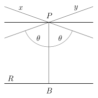
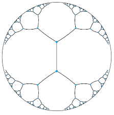
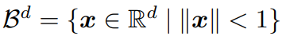
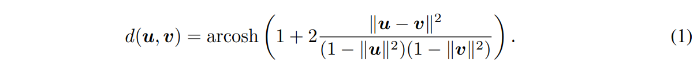
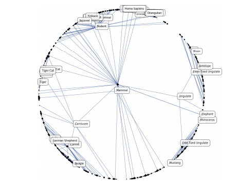

Representation Learning or Feature Learning has transformed into an indispensable requirement in the field of Machine Learning. Representation Learning deals with learning from symbolic data such as texts, graphs and multi-relational data. It basically works by learning representations of input data typically by transforming it or extracting features from it. This subsequently makes it easier to perform tasks like classification or prediction.
Like for example, word embedding such as WORD2VEC, GLOVE and FASTTEXT are widely used for tasks ranging from machine translation to sentiment analysis. Similarly, embedding of graphs such as latent space embedding, NODE2VEC, and DEEPWALK have found important applications for community detection and link prediction in social networks. Embedding of multi-relational data such as RESCAL, TRANSE, and Universal Schema are being used for knowledge graph completion and information extraction. The primary objective of all these embedding methods is to organize symbolic objects in a way such that their similarity in the embedding space reflects their semantic or functional similarity. This similarity can usually be calculated either by their distance or by their inner product in the embedding space. For example, Mikolov et al embed words in R^d such that their inner product is maximized when words co-occur within similar contexts in text corpora. This is motivated by the distributional hypothesis, i.e., that the meaning of words can be derived from the contexts in which they appear.
However, the process suffers from a limitation. The ability of embedding methods to model complex patterns is inherently bounded by the dimensionality of the embedding space. Even though non-linear embeddings can alleviate the problem, however, complex graph patterns can still require a computationally infeasible embedding dimensionality. Since the ability to express information is a precondition for learning and generalization, it is therefore important to increase the representation capacity of embedding methods such that they can realistically be used to model complex patterns on a large scale. Here, we focus on mitigating this problem for a certain class of symbolic data, i.e., large data-sets whose objects can be organized according to a latent hierarchy — a property that is inherent in many complex data-sets. It is here that we bring up the process of computing embeddings in the hyperbolic space instead of the Euclidean space.
Hyperbolic n-space is a maximally symmetric, simply connected, n-dimensional Riemannian manifold with constant negative sectional curvature. Hyperbolic space is a space exhibiting hyperbolic geometry. It is the negative-curvature analogue of the n-sphere. Hyperbolic space can simply be thought of as a continuous version of trees which is naturally equipped to model hierarchical structures. A variant of hyperbolic space called the Poincaré disk. In a Poincaré disk it is travel near the boundary that is heavily penalized. Before diving any deep, I would like to elaborate more about hyperbolic geometry and embeddings.
Hyperbolic geometry is the geometry you get by assuming all the postulates of Euclid, except the fifth one, which is replaced by it’s negation. In Hyperbolic geometry, we change the parallel postulate to: For any given line R and point P not on R, in the plane containing both line R and point P there are at least two distinct lines through P that do not intersect R.

In this figure, Lines x and y intersecting at P never pass through line R, although it is possible that they can asymptotically approach it.
Hyperbolic geometry has also strikingly shown up countless number of times in nature. For instance, you can see some characteristically hyperbolic “crinkling” in lettuce leaves, the brain, sea plants, jellyfish tentacles and so on. Hyperbolic space manages to pack in more surface area within a given radius than a flat or positively curved geometries. This structure increases the surface area allowing the organisms to have efficient use of their bodily organs.
In hyperbolic space, a circle of a fixed radius packs in more surface area than its flat or positively-curved counterpart; you can see this explicitly, for example, by putting a hyperbolic metric on the unit disk or the upper half-plane, where you will compute that a hyperbolic circle has area that grows exponentially with the radius. As a result of which, this added surface area has to go somewhere and hence “crinkles” up. In network science, hyperbolic spaces have started to receive attention as they are well-suited to model hierarchical data. For instance, consider the task of embedding a tree into a metric space such that its structure is reflected in the embedding.
A regular tree with branching factor b has (b + 1)b ^(l−1) nodes at level l and ((b + 1)b^l− 2)/(b − 1) nodes on a level less or equal than l. Hence, the number of children grows exponentially with their distance to the root of the tree. In hyperbolic geometry this kind of tree structure can be modeled easily in two dimensions: nodes that are exactly l levels below the root are placed on a sphere in hyperbolic space with radius r ∝ l and nodes that are less than l levels below the root are located within this sphere. This type of construction is possible as hyperbolic disc area and circle length grow exponentially with their radius.

Thus, hyperbolic spaces can be thought of as continuous versions of trees or vice versa, trees can be thought of as discrete hyperbolic spaces.
Poincaré embeddings are a method to learn vector representations of nodes in a graph. It takes as input a list of relations (edges) between nodes, and attempts to learn vector representations of nodes such that the distances between the vectors for the nodes accurately represent how close the nodes are in the graph. The learnt embeddings capture notions of both kinds of similarity — similarity by placing connected nodes close to each other and unconnected nodes far from each other — and hierarchy by placing nodes lower in the hierarchy farther from the origin, and nodes high in the hierarchy close to the origin. In the following, we are interested in finding embeddings of symbolic data such that their distance in the embedding space reflects their semantic similarity. In this derivation, we however do not assume that that we have direct access to information about the hierarchy, e.g., via ordered input pairs (unsupervised learning). The symbolic data is embedded into hyperbolic space H.
Out of the multiple models of H, we base our approach on the Poincaré ball model. The reason behind this selection is because the Poincaré ball model is well-suited for gradient based optimization. More about this will be discussed soon.

Let B^d be an open d-dimensional unit ball, where ||.|| denotes the denotes the Euclidean norm. The Poincaré ball model of hyperbolic space corresponds then to the Riemannian manifold (B ^d , gx), i.e., the open unit ball equipped with the Riemannian metric tensor gx:
Here, g^E is the the Euclidean metric tensor. To calculate the distance between points (u, v) ∈ Bd

It can be seen from Equation (1), that the distance within the Poincaré ball changes smoothly with respect to the location of u and v. This is because Equation (1) is differentiable. This is called the locality property of the Poincaré distance. This locality property of the Poincaré distance is key for finding continuous embeddings of hierarchies. For instance, by placing the root node of a tree at the origin of B d it would have a relatively small distance to all other nodes as its Euclidean norm is zero. On the other hand, leaf nodes can be placed close to the boundary of the Poincaré ball as the distance grows very fast between points with a norm close to one.

The distance equation is symmetric and thus it can be concluded that the hierarchical organization of the space is determined by the distance of the points to the origin. This property can be called the self-organizing property. It is because of this property, the equation is applicable in an unsupervised setting where the hierarchical order of objects is not specified in advance. This Equation (1) allows us therefore to learn embeddings that simultaneously capture the hierarchy of objects (through their norm) as well a their similarity (through their distance).
This was a short blog with an amateur attempt to jot down how hyperbolic geometry could be used to capture the hierarchical property of words. I’ll keep adding as I learn more about this topic. I would love to code all that I have written and studied in the upcoming blogs :D
03-03-2020